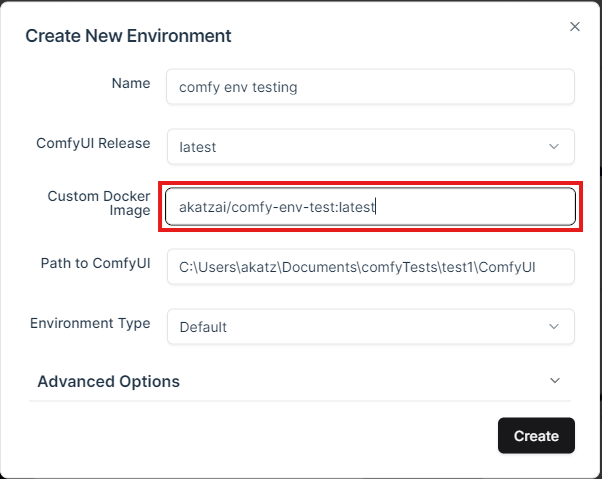

Environment Sharing Using DockerHub¶
Sharing your ComfyUI environment via a container registry like DockerHub makes it easy for others to download and use your environment exactly as you configured it. Here’s how to do it step by step:
Step 1: Prepare the Environment¶
- Create or Duplicate an Environment:
- Use the ComfyUI Environment Manager to create a new environment or duplicate an existing one that you want to share or back up.
-
Install or Modify Files:
- Add custom nodes, models, or workflows via the Comfy Manager.
- For more advanced edits, attach to the running container using VSCode (see the earlier guide) and make changes directly inside the container.
Important: Only files inside the container are saved when creating an image. Files from mounted directories (e.g., your
modelsfolder on your host machine) will not be included in the image. If needed, copy these files into the container.
Step 2: Create a DockerHub Repository¶
- Log in to DockerHub at hub.docker.com
- Navigate to your “Repositories” page.
- Click on Create a repository.
- Name your repository (e.g.,
comfy-env-test) and set its visibility (public or private). - Use this name in the following tagging step.
Step 3: Duplicate and Tag the Environment¶
- Duplicate the Environment:
- Once the environment is ready, duplicate it to generate a new image. The image will be named something like
comfy-env-clone:<environment-name>.
- Once the environment is ready, duplicate it to generate a new image. The image will be named something like
-
Locate the Image:
-
Open Docker Desktop or use the following command to list available images:
docker images -
Find the
comfy-env-clone:<environment-name>image in the list.
-
-
Tag the Image for DockerHub:
-
Use the
docker tagcommand to tag the image with your DockerHub repository name:docker tag comfy-env-clone:<environment-name> <dockerhub-username>/<repo-name>:<tag>Example:
docker tag comfy-env-clone:my-environment akatzai/comfy-env-test:latest
-
Step 4: Push the Image to DockerHub¶
-
Log in to DockerHub:
-
Run the following command and enter your credentials:
docker login
-
-
Push the Image:
-
Upload the tagged image to your DockerHub repository:
docker push <dockerhub-username>/<repo-name>:<tag>Example:
docker push akatzai/comfy-env-test:latest
-
-
Share the Repository URL:
- Once the push is complete, share the repository URL (e.g.,
akatzai/comfy-env-test:latest) with others. They can now download and run the image on their machine.
- Once the push is complete, share the repository URL (e.g.,
Step 5: Running the Shared Environment¶
-
Download the Image:
-
Users can download the image directly from their Environment Manager interface via the Create Environment dialog:

-
Users can also pull the image using the following command:
docker pull <dockerhub-username>/<repo-name>:<tag>Example:
docker pull akatzai/comfy-env-test:latest
-
-
Run the Environment:
- If pulled via the Create Environment interface, activate the new environment and run as normal.
-
Start the container with appropriate mount settings for models, outputs, and other directories:
docker run -it --rm -v /path/to/models:/app/models -v /path/to/output:/app/output <dockerhub-username>/<repo-name>:<tag>
Important Notes:¶
- Mounted Directories: Ensure you know which directories to mount (e.g.,
models,input,output) for the environment to function properly. - Immutable Environment: The container image is immutable, meaning you cannot change files inside it permanently unless you create a duplicate image.